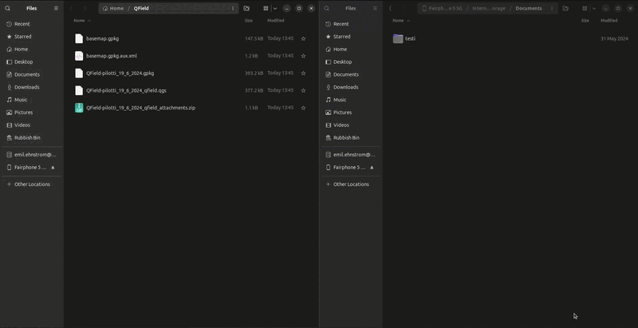

Projektin avaaminen QFieldissa
GeoPackage-tiedostoon tallennettu QGIS-projekti avautuu QFieldissa suoriltaan ilman välivaiheita. GeoPackagen voi avata eri tavoilla, ml. lataamalla GeoPackage-tiedoston Android-mobiilipäätteelle, avaamalla tiedoston Google Drive -linkin tai Google Drive -sovelluksen kautta.
Projektin avaaminen QFieldin Tuo URL-toiminnolla (helpoin)
-
Avaa QField ja valitse Avaa paikallinen tiedosto.
-
Klikkaa oikean alakulman + -painiketta ja valitse Tuo URL
-
Liitä avautuvaan ikkunaan tämä ZIP-paketin suoraosoite: https://drive.google.com/uc?export=download&id=1eDXXaWPuvdf8Gh_VLST9cFO6T7tb2N1N
-
Valitse "Projektit"- kohdasta projektitiedosto.
Projektin avaaminen QFieldin Tuo projekti ZIP-tiedostosta toiminnolla (vaihtoehtoinen)
-
Lataa Google drive ZIP-tiedosto puhelimeesi.
-
Avaa QField ja valitse Avaa paikallinen tiedosto.
-
Klikkaa oikean alakulman + -painiketta ja valitse "Tuo projekti ZIP-tiedostosta"
-
Etsi juuri ladattu tiedosto. Löytyy yleensä Lataukset/Downloads- kansiosta.
-
Jos QField löytää vanhan version, valitse "Tuonti ja päällekirjoitus"
-
Valitse "Projektit"- kohdasta projektitiedosto.
Projektin pakkaaminen ja vienti QFieldiin QFielSync-QGIS-lisäosan avulla
Jos sinun tarvitsee tehdä edistyneitä määrityksiä projektitiedostoon, sinun on hyödynnettävä QFieldSync-QGIS-lisäosaa ja paketoida QField-projekti sitä kautta erilliseen tiedostohakemistoon.
Projektin pakkaaminen
QGIS-projekti viedään QFieldiin kopioimalla tarvittavat tiedostot sisältävä kansio tietokoneelta mobiililaitteelle. Ensin pitää kuitenkin tehdä pakkaaminen QField Sync-lisäosan kautta. Avaa Pakkaa QFieldiä varten "Package for QField" työkalupalkista
{kind=link}
tai valikosta Lisäosat-> QFieldSync-> Pakkaa QFieldiä varten. Oletuskansiona, johon QField-projekti paketoidaan, on käyttäjän kotikansion alla olevan QField-kansion Export-alikansio (Esim. C:\Users\käyttäjänimi\QField\Export). Valitse tai luo tyhjä kansio sopivaan sijaintiin ja paina Luo (Create). Prosessin valmistuttua QGISin karttaikkunan ylälaidan palkkiin tulee ilmoitus onnistumisesta ja kansiosijainti, jota klikkaamalla pääsee ko. sijaintiin.
Voit katsoa esimerkkiä alla olevasta videosta, joka tuotettiin Luonnonvarakeskukselle tuotetussa metsien koealoihin littyneessä QField-PoC-projektissa (vuonna 2024).

Jos et ole vielä kytkennyt omaa puhelinta tietokoneeseen esimerkiksi usb-kaapelilla, niin tee se. Käy sitten kopioimassa kaikki tiedostot (eli käytännössä em. kansio) jotka äsken loit lisäosan avulla ja siirrä ne puhelimeen sellaiseen sijaintiin, jonka muistat.
Huom!
Jos tietokoneella ei pääse näkemään yhtään tiedostoja puhelimella, niin avaa puhelimen näyttö ja salli tarvittaessa yhteyden muodostaminen. Saattaa olla tarpeen myös tarkistaa puhelimen asetuksista, että tiedostojen siirto on sallittu, eikä pelkkä lataus.
Tiedostojen siirto
Siirtäminen tapahtuu esimerkiksi raahaamalla edellä luotu tiedostokansio (videossa nimellä testiversio1), tai kopioimalla tiedostoina kuten esimerkissä alla. Suosittelemme että luot uuden kansion jokaiselle projektille, jotta tiedostopolut ovat selkeitä.
